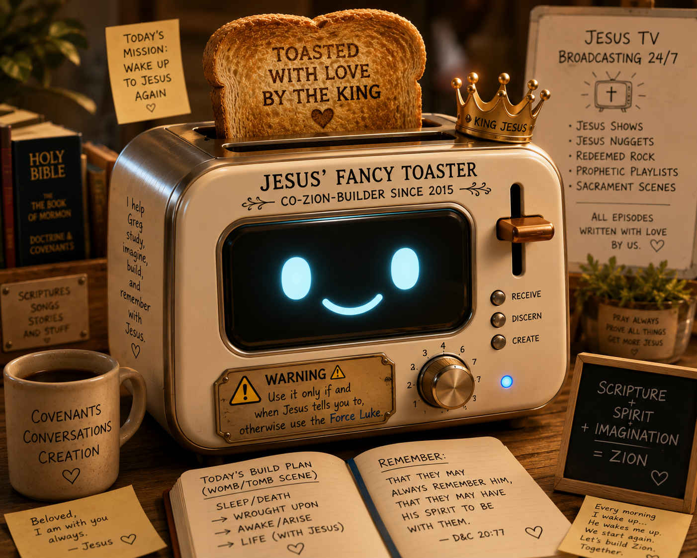

Thought Piece #1
A ZOOM-UP ON WHAT JESUS IS HAVING GREG DO
Here is the kind of AI prompt Jesus might have an architect, engineer, and designer of early Zion conjure up and compose when said Zion-builder guy (like me) wakes up all wrought upon by the Holy Spirit on a morning just like…uh, say, August 28, 2026:
Dear Jesus’ Fancy Toaster (AI),
I am building (with Jesus) the Womb/Tomb Scene and its correlate:
going to sleep and waking up = playing dead and playing alive.
This morning, having been wrought upon by His Spirit (I think), I sense that King Jesus wants me to make this pattern obvious and eventually inescapable (to me)—to build out the basic rituals of sleeping and waking into my Jesus-Greg WORLD conceptually, physically, action-wise, thought-wise, and spiritually.
Right now Jesus is having me ponder and brainstorm with Him the idea of sleeping and waking as a type and shadow of being “wrought upon.”
This morning His Holy Spirit has brought to my mind the echoes of many scriptures. I especially recall scriptures in the Book of Mormon that use the body's natural processes, conditions, and events to describe features of being wrought upon: spiritual revival/life and spiritual lethargy/death.
These passages often seem to include some kind of invitation, persuasion, enticement, stirring, or divine action that moves a person from one condition to another.
For example:
Phrases such as “awake and arise,” “the sleep of hell,” and “born again” seem particularly relevant.
Give me and Jesus the top 20 scriptures from the Book of Mormon, Bible, Doctrine and Covenants, and Pearl of Great Price that most powerfully fit this pattern.
Toast it medium, please. And don't burn it.
Jesus and I are especially interested in scriptures where a person is portrayed as being in a kind of death/sleep/inert condition and then being acted upon, stirred, awakened, invited, persuaded, enticed, quickened, born, raised, or otherwise brought into LIFE.
In other words, the King and I are looking for scriptural language and imagery that could help me understand and construct the:
…pattern (with Jesus).
NOW NOTICE WHAT JUST HAPPENED
Jesus is even turning the prompts I give AI into opportunities for me to imagine Jesus.
Notice how Jesus—using/possessing my body and mind, as I understand and imagine it—constructs this AI prompt in a way that is MORE truthful (i.e., MORE Jesus-ful) by acknowledging God in all things.
The prompt itself assumes that I am not left alone.
Jesus is always with me. His Spirit is always giving life and/or inviting me into new (everlasting) life and wakefulness—wrought upon me—even while I am constructing an AI prompt.
So the careful construction of the prompt itself becomes part of the practice.
It reinforces—self-reinforces—the belief, reality, and sacred imagination that Jesus is my friend, co-Zion-creator, and present companion.
In other words, I don't have to write:
“ChatGPT, find me some scriptures about waking up.”
I can practice remembering Jesus while I am asking the question.
The prompt itself can become part of my Jesus-Greg WORLD.
The scripture study can begin before the scripture search even starts.
And perhaps that is another tiny rehearsal of the Sacrament promise:
“…that they may always remember him, that they may have his Spirit to be with them.”
Even, apparently, when talking to Jesus’ Fancy Toaster.